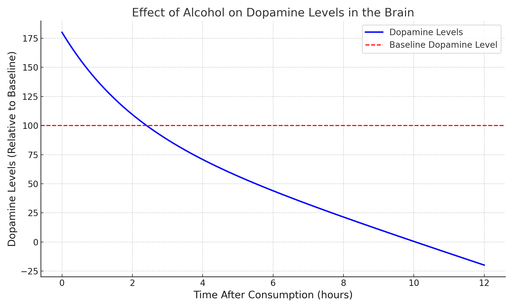

EFFETTI DELL'ALCOL SUL NOSTRO CORPO
"L’effetto dell’alcol sul cervello e la tolleranza."
Il tema che mi ha colpito di più è stato l'effeto dell'alcol sul cervello e la tolleranza. Questo aspetto mi ha colpito perché evidenzia come il cervello si adatta al consumo di alcol, portando alla necessità di quantità sempre maggiori per ottenere lo stesso effetto. Questo processo, chiamato tolleranza, è spesso interpretato come un segnale di "resistenza" positiva, ma in realtà è un sintomo di dipendenza in fase iniziale. Come gia detto in precedenza L’alcol rallenta l’attività dei neuroni, portando a una temporanea riduzione delle inibizioni e del giudizio. Si altera il sistema di ricompensa del cervello, con il rilascio di dopamina che provoca una sensazione di piacere. Per comprendere meglio l’effetto sul cervello, qui sotto si puo vedere un esempio di grafico che mostra la relazione tra il consumo di alcol e i livelli di dopamina.
Questo ci fa capire quanto questa sostanza crei dipendenza, la tolleranza, spesso sottovalutata, è un segnale chiave che ci dice che il nostro corpo si sta adattando negativamente al consumo di alcol, rendendo sempre più difficile un consumo moderato e quindi creando dipendenza. Nel video un gruppo di volontari è stato sottoposto a test per misurare i postumi dopo aver consumato alcol in base al loro peso corporeo. I partecipanti alla colazione hanno avvertono i sintomi tipici di una sbornia... il sintomo più comnune è stato mal di testa.
